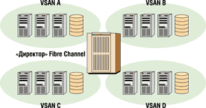
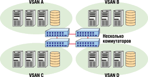
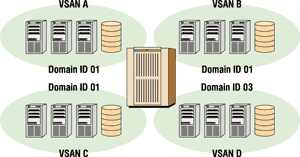
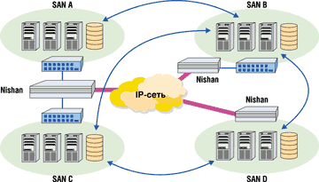

Анатолий Журкин
Концепция сетей хранения данных (Storage Area Network, SAN) предусматривает возможность соединения любого из серверов имеющейся вычислительной системы с любым устройством хранения данных, использующим протокол Fibre Channel. Сети SAN позволяют упростить совместное использование ресурсов хранения, централизовать администрирование хранения данных, повысить степень готовности применяемых решений и сократить общие расходы на расширение хранения и управление им. Технология SAN, уже получившая распространение на практике, продолжает развиваться, дополняться новыми функциями и возможностями. Одним из новых направлений в развитии этой технологии стала концепция виртуальных SAN (Virtual SAN), предложенная корпорацией Cisco Systems (http://www.cisco.com) в этом году. Однако и ей уже найдена альтернатива.
Компоненты сетей хранения
Транспортную основу SAN изначально составлял протокол Fibre Channel, использующий медные или волоконно-оптические соединения и обеспечивающий скорость передачи данных 400 Мбайт/с в дуплексном режиме. Обычно решение SAN состоит из хост-адаптеров HBA (Host Bus Adapters), ресурсов хранения данных, устройств, реализующих инфраструктуру SAN, и соответствующего ПО. Адаптеры НВА устанавливаются в серверы и обеспечивают их взаимодействие с SAN по специальному протоколу. К ресурсам хранения данных относятся дисковые массивы, ленточные приводы и библиотеки, причем некоторые возможности ресурсов хранения реализуются только в рамках структуры SAN. Так, наиболее совершенные дисковые массивы могут осуществлять репликацию данных по сетям Fibre Channel, а ленточные библиотеки - переносить данные на ленту прямо с дисковых массивов с интерфейсом Fibre Channel, минуя сеть и серверы.
Для построения инфраструктуры SAN служат коммутаторы, концентраторы и маршрутизаторы. Обычно концентраторы объединяют устройства, работающие в режиме Fibre Channel Arbitrated Loop (FC-AL), и позволяют подключать и отключать устройства без остановки системы. Концентратор автоматически замыкает петлю в случае отключения устройства и автоматически размыкает ее, если к нему было подключено новое устройство.
Все современные SAN, как правило, построены на базе коммутаторов, позволяющих реализовать полноценное сетевое соединение. Дело в том, что коммутаторы могут не только соединять между собой устройства Fibre Channel, но и разграничивать доступ путем создания так называемых зон. Обмен информацией между устройствами, помещенными в разные зоны коммутатора, невозможен.
Количество портов в SAN можно увеличивать, соединяя коммутаторы между собой. Группа связанных коммутаторов носит название "фабрики", а связь между коммутаторами называют Interswitch Link (ISL). Коммутаторы, не позволяющие составлять подобные "фабрики" или имеющие ограниченные возможности (например, только c одной ISL-связью), относятся к устройствам начального уровня. Более совершенные устройства (класс "директор") - это модульные коммутаторы с числом портов больше 64 и продублированными компонентами (блоки питания, вентиляторы, управляющие процессоры и модули коммутации).
Виртуальные сети хранения
Итак, для построения сети хранения данных с помощью одного или нескольких коммутаторов серверы (инициаторы запросов) соединяются с ресурсами хранения (адресатами). SAN первого поколения строились исключительно на базе Fibre Channel, однако современные коммутаторы SAN могут использовать и протокол Gigabit Ethernet. Существуют также комбинированные IP-коммутаторы для хранения данных, реализующие функции сразу обоих протоколов.
По мнению специалистов Cisco Systems, виртуальные SAN могут решить некоторые проблемы, характерные для фабрик Fibre Channel. Под сетями хранения в виртуальных SAN понимается не просто сеть хранения данных, а только такая сеть, которая построена на коммутаторах Fibre Channel. Цель технологии Virtual SAN состоит в том, чтобы заставить одиночную фабрику Fibre Channel работать как несколько отдельных фабрик. Большой коммутатор фабрики Fibre Channel класса "директор" (рис. 1) можно логически разделить на несколько виртуальных коммутаторов фабрик, что дает возможность изолировать трафик систем хранения внутри каждой виртуальной фабрики.
|  | Рис. 1. Фрагментирование на несколько виртуальных SAN с помощью "директора" Fibre Channel.
|
Точно так же одиночную фабрику Fibre Channel, состоящую из нескольких физических коммутаторов, можно логически разделить на несколько виртуальных фабрик, причем трафик от одной виртуальной фабрики будет изолирован от остальных (рис. 2). В подобных системах могут соединяться несколько коммутаторов, однако устройства из Virtual SAN A при этом не могут обмениваться данными с устройствами в Virtual SAN D. В каждую виртуальную SAN можно включить несколько портов из любого коммутатора Fibre Channel.
|  | Рис. 2. Разделение конфигурации из нескольких коммутаторов на несколько Virtual SAN.
|
Стандарты Fibre Channel сейчас не поддерживают эти функции виртуальных SAN, поэтому Virtual SAN неизбежно остается фирменным решением, которое предполагает использование оборудования от одного производителя. В то же время решение на базе IP-сетей, стандартизованное как технология виртуальных локальных сетей Ethernet (VLAN), может поддерживать конфигурации с оборудованием разных производителей.
Как уже говорилось, виртуальные SAN должны решить несколько проблем, связанных с архитектурой Fibre Channel и возникающих при построении систем хранения. Речь идет о проблемах с адресацией Fibre Channel, изменением конфигурации фабрики и размера таблиц сервера "простых" имен SNS (Simple Name Server) в больших инсталляциях.
Адресация Fibre Channel
С самого начала протокол Fibre Channel разрабатывался для самоконфигурирующихся сетей с автоматическим выделением сетевых адресов коммутаторам и устройствам. Для правильной маршрутизации данных, проходящих через фабрику Fibre Channel, каждый коммутатор в ней должен иметь уникальное адресное пространство. Хранящиеся данные могут быть критически важными, поэтому ошибки в маршрутизации данных грозят недопустимой потерей или порчей данных. Уникальным идентификатором для каждого коммутатора Fibre Channel служит его область идентификации Domain ID. Первичный (основной) коммутатор фабрики работает как менеджер идентификаторов Domain ID и назначает уникальный блок адресов каждому коммутатору, входящему в фабрику.
Обычный коммутатор Fibre Channel будет иметь один Domain ID и блок адресов, которые он назначает подключенным к нему конечным устройствам. В реализации Virtual SAN один коммутатор Fibre Channel может иметь несколько Domain ID, по одному на каждую виртуальную сеть хранения. Эти виртуальные сети полностью изолированы одна от другой, что позволяет определить дублирующие идентификаторы Domain ID и дублирующие адреса для конечных устройств из разных виртуальных сетей (рис. 3). Такая изоляция Virtual SAN гарантирует отсутствие ошибок при маршрутизации пакетов внутри виртуальных SAN даже при дублировании адресов в одном физическом коммутаторе.
|  | Рис. 3. Реализация дублирующих Domain ID.
|
С точки зрения клиента реализация дублирующих Domain ID в Virtual SAN упрощает управление самой виртуальной сетью. Если разрешено дублирование адресов, то администратору систем хранения не надо тщательно отслеживать распределение Domain ID. Вместе с тем он должен обеспечивать правильную конфигурацию каждой виртуальной сети и следить за тем, чтобы к каждому порту Virtual SAN было подключено нужное устройство. Как и в случае зонирования портов, подключение конечного устройства к неправильному порту коммутатора приводит здесь к тому, что устройство не сможет обмениваться данными с нужными адресатами.
Реконфигурирование фабрики
Одно из главных преимуществ виртуальных сетей хранения - возможность ограничить влияние реконфигурирования фабрики. В традиционных SAN на базе Fibre Channel реконфигурирование фабрики происходит, когда два коммутатора в одной фабрике работают как основные для сети. Например, если коммутатор, сконфигурированный ранее как первичный, подключить к сети, это может вызвать реконфигурирование фабрики. Цель реконфигурирования - выбрать основной коммутатор и, если необходимо, перераспределить Domain ID и блоки адресов для каждого коммутатора в фабрике.
В последнем случае конечные устройства должны приостановить текущие операции, связанные с хранением данных, и заново зарегистрироваться в фабрике. Такие прерывания работы из-за реконфигурирования фабрики создают серьезные проблемы в SAN с несколькими коммутаторами, приводя к простоям и нестабильности при добавлении в фабрику новых коммутаторов.
Реконфигурирование фабрики также может быть вызвано потерей Domain ID в фабрике с несколькими коммутаторами при "исчезновении" одного из них, например, при нарушении связи между коммутаторами. Если две группы коммутаторов соединены по туннелю FCIP через глобальную сеть, то сбои в глобальной сети могут нарушить связь между коммутаторами, и тогда каждая из групп запускает процесс реконфигурирования фабрики и образует отдельные "острова" SAN. Это главный недостаток применения FCIP в территориально распределенных приложениях при восстановлении после катастроф, репликации данных на большое расстояние и т. п.
Хотя виртуальные SAN не устраняют полностью нарушения работы из-за реконфигурирования фабрики, они позволяют уменьшить число устройств, которые затрагивает этот процесс. Например, если используется одиночный 128-портовый коммутатор Fibre Channel класса "директор", то при реконфигурировании фабрики может нарушиться работа сотен устройств. Однако если разделить директор на пять виртуальных сетей по 20 портов в каждой, то реконфигурирование фабрики будет происходить только в одной из Virtual SAN и затронет не больше двадцати устройств.
С точки зрения клиента ограничение влияния реконфигурирования частично решает проблему, но не устраняет причину нестабильности фабрики и, кроме того, приводит к изолированию отдельных ресурсов хранения. Одна виртуальная сеть защищена от реконфигурирования фабрики другой сети только в том случае, если эти две виртуальные SAN полностью изолированы и соответственно не могут совместно использовать такие ресурсы, как ленточная библиотека.
Обработка SNS
Каждый коммутатор Fibre Channel ведет базу данных атрибутов конечных устройств, которая называется сервером "простых" имен, или SNS. В крупных фабриках SNS должна быть достаточно большой для хранения записей о тысячах устройств. При повторной инициализации большого коммутатора фабрики (например, при реконфигурировании фабрики) может потребоваться определенное время для регистрации всех конечных устройств в фабрике и внесения их атрибутов в SNS.
Технология Virtual SAN помогает решить проблемы больших таблиц SNS путем разделения фабрики на несколько областей SNS. Например, 256-портовый коммутатор фабрики можно разделить на несколько маленьких виртуальных, у каждого из которых будет небольшой SNS. В теории это упрощает виртуализацию и стабилизирует фабрику, поскольку каждая виртуальная фабрика должна обработать меньше записей SNS. Однако подобное решение реализуется за счет создания небольших отдельных SAN, которые не могут совместно использовать ресурсы. Для крупных корпораций, стремящихся реализовать стратегию хранения в масштабах предприятия, применение виртуальных сетей хранения означает развертывание нескольких полностью разделенных "островов" SAN.
Предшественники Virtual SAN
До появления виртуальных сетей хранения были прецеденты решения проблем Fibre Channel за счет разделения сетевого оборудования SAN. В конце 1990-х производители концентраторов с управляемой петлей выводили на рынок концентраторы Fibre Channel, которые можно было разделить на виртуальные разделяемые петли. В частности, компания G2Networks выпустила 10-портовый концентратор, который можно было разделить на две отдельные управляемые петли, а компания Vixel предложила 12-портовый концентратор, который делился на четыре отдельные петли. Однако эти продукты не имели успеха на рынке - в основном из-за того, что клиенты не видели смысла в разделении ресурсов одной SAN на несколько изолированных групп. Как и в случае Virtual SAN, виртуальные управляемые петли не позволяют включать одно устройство в несколько SAN и, таким образом, сводят на нет преимущества совместного использования сетевых систем хранения.
Ограничения Virtual SAN
Хотя технология Virtual SAN помогает найти решение проблем, связанных с адресацией Fibre Channel, реконфигурированием фабрик и серверами SNS для крупных фабрик, некоторые эксперты полагают, что при реализации сетей хранения эта технология имеет ограниченное применение. Дело в том, что стабильность SAN обеспечивается здесь путем фрагментации сети хранения и создания из нее нескольких небольших SAN, более простых с точки зрения конфигурирования и администрирования. При этом становится невозможным обмен данными между разными виртуальными SAN, а устройства хранения, входящие в состав одной Virtual SAN, оказываются изолированными от остальной сети хранения. Такой подход существенно уменьшает гибкость распределения ресурсов, затрудняет организацию совместного использования разными подразделениями таких дорогих систем, как ленточные библиотеки. Подобное разделение ресурсов Fibre Channel на отдельные "острова" Virtual SAN означает возврат к небольшим конфигурациям SAN, типичным для первого этапа развития сетей хранения на базе Fibre Channel.
Многие клиенты уже прошли этот этап и хотят соединять, а не разделять свои "острова" SAN, создавая сети хранения масштаба предприятия. Возможно, именно поэтому специалисты из компании Nishan Systems (http://www.nishansystems.com) не рекомендуют рассматривать Virtual SAN как полноценное решение для крупных фабрик. Вместо этого Nishan Systems предлагает собственную технологию - SAN Internetworking, которая также решает типичные проблемы адресации Fibre Channel, реконфигурирования фабрики и расширения SNS, но, как утверждается, без ограничений, присущих Virtual SAN.
Технология SAN Internetworking
В решениях на базе SAN Internetworking каждая фабрика Fibre Channel поддерживает собственное адресное пространство, собственный основной коммутатор и собственный сервер SNS. Сбои в одной SAN при этом изолируются от остальных компонентов. Кроме того, SAN Internetworking обеспечивает связь между независимыми сетями хранения; при этом возможно совместное использование ресурсов хранения разными SAN. Это позволяет развертывать сети хранения масштаба предприятия, которые совместно используют выделенные ресурсы и обеспечивают изоляцию сбоев в границах подразделения компании или площадки (рис. 4).
|  | Рис. 4. Масштабирование до уровня большой сети хранения с помощью SAN Internetworking.
|
Технология SAN Internetworking предусматривает соединение с любым числом коммутаторов Fibre Channel через стандартный порт расширения E_Port. Однако, в отличие от обычных соединений между коммутаторами через E_Port, Nishan SAN Internetworking не требует установки оконечной нагрузки E_Port на каждом коммутаторе. Такие операции Fibre Channel, как выбор основного коммутатора при реконфигурировании фабрики, ограничиваются каждой локальной фабрикой и не распространяются на всю сеть хранения. Возможность дублирования идентификаторов Domain ID упрощает работу сетевого администратора. Поскольку каждая локальная SAN "видит" только назначенные ей удаленные ресурсы хранения, то размер каждой SNS остается неизменным. Таким образом, SAN Internetworking решает те же задачи, что и виртуальные SAN, но без ограничений на совместное использование ресурсов в сети хранения. Кроме того, разработчики из Nishan Systems подчеркивают, что их IP-коммутаторы сетей хранения обеспечивают подключение локальной фабрики к конечным устройствам, сокращая потребность в коммутаторах Fibre Channel для новых инсталляций.
Технология SAN Internetworking поддерживает как сети Fibre Channel, так и IP/Ethernet, что обеспечивает клиенту дополнительные преимущества, например, качество сервиса (QoS), безопасность, а также возможность использовать для трафика хранения данных стандартную технологию виртуальных локальных сетей (VLAN). Стандарты IEEE 802.1p/Q регламентируют систему приоритетов трафика и VLAN для сетей Ethernet и Gigabit Ethernet. В случае использования IP-коммутаторов хранения Nishan технология SAN Internetworking обеспечивает изоляцию отказов в сетях хранения Fibre Channel SAN, а также разделение трафика с помощью инфраструктуры Gigabit Ethernet. Таким образом, благодаря SAN Internetworking достигается высокий уровень функциональности для сетей Fibre Channel и IP, и клиентам предоставляется намного больше опций, чем в случае фирменных решений Virtual SAN, поддерживающих только Fibre Channel.
Так, с помощью технологии SAN Internetworking можно построить сети хранения масштаба предприятия, консолидируя центр обработки данных и удаленные SAN без риска, связанного с прерываниями работы сетей хранения и нестабильностью Fibre Channel. В частности, SAN Internetworking может масштабироваться до тысяч конечных устройств в одной сети, разбросанной практически на любые расстояния. Поскольку данная технология использует стандартное соединение через порт расширения E_Port, она может использоваться в SAN, где установлено оборудование разных фирм-производителей. Это весьма гибкое решение, не накладывающее ограничений на выбор фирменных продуктов и соответствующее требованиям большинства клиентов к совместимости с открытыми системами.